使用Git向GitHub提交代码
下载对应的Git工具,地址:https://git-scm.com/downloads
打开命令提示附输入
git --version
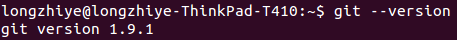
说明git安装成功
配置git
git config --global user.email "github邮箱"
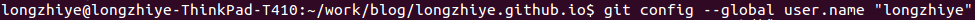
git config --global user.name "github名字"
配置ssh
打开文件夹
cd ~/.ssh
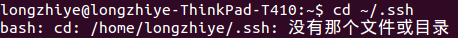
如果出现以上提示，则还需要进行下面两步操作，手动创建相应文件夹
cd ~
mkdir .ssh
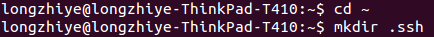
ssh-keygen -t rsa -C "你的gtihub的邮箱"
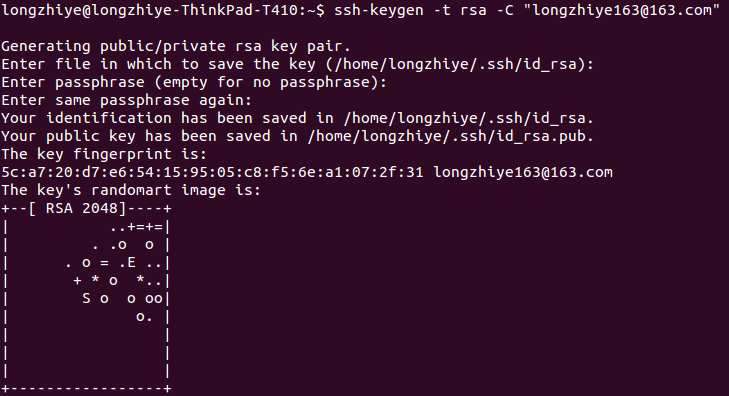
下面开始配置Github
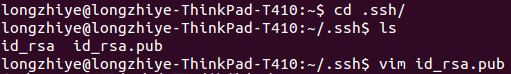
vim打开该文件，将里面的内容全部复制出来
打开自己Github的设置,添加如下相应的内容
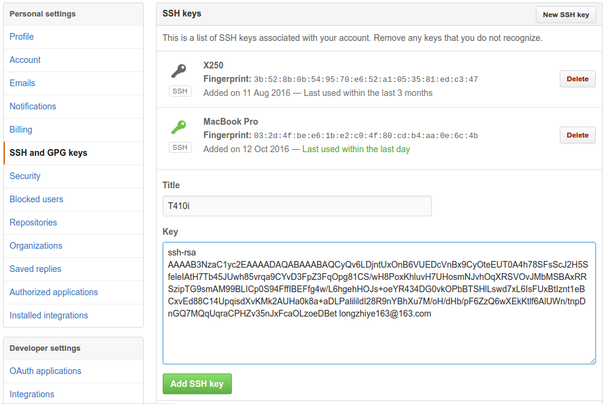
在自己的Github上找到想要修改的仓库，如果没有的话就新建一个，点击头像旁边的加号 add new ,选择new Repository，名字随便填写
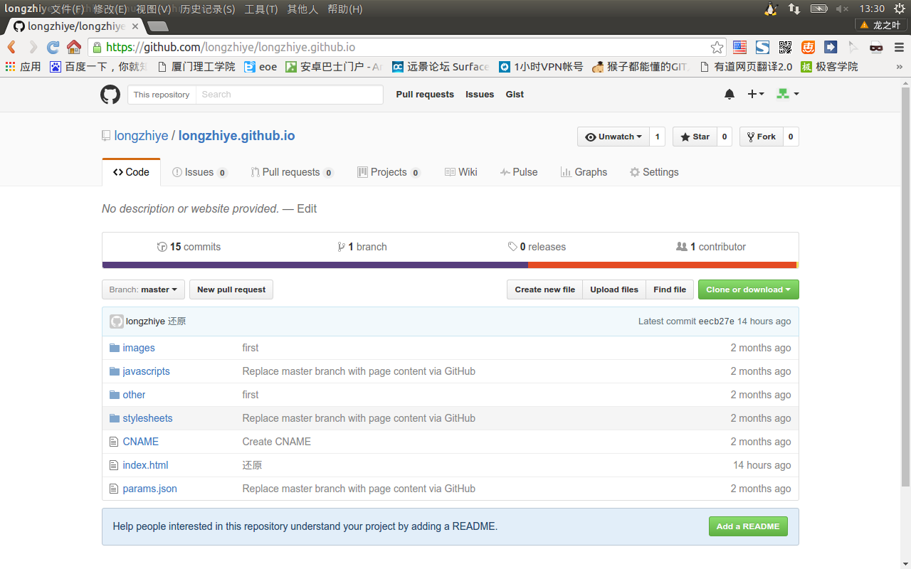
创建一个对应的项目路径，并且初始化git
git init
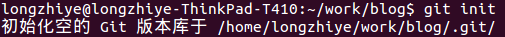
git clone 你的仓库地址
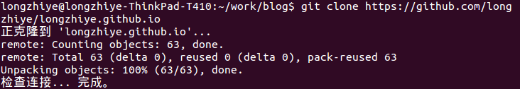
项目就已经导入到本地中，下面请尽情地挥霍你的才华
提交代码
检测当前状态
同步远程服务器代码
git pull
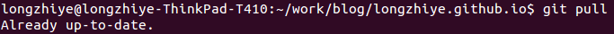
git status
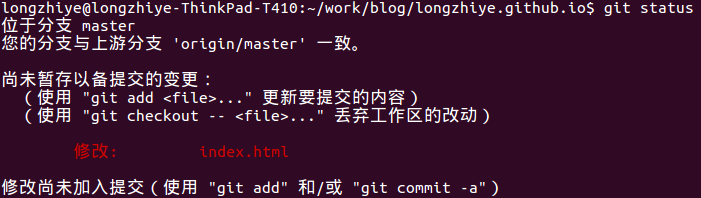
修改内容先添加到本地仓库
git add -a
修改内容提交到本地仓库
commit -m '提交说明'
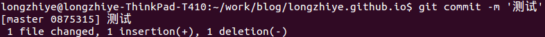
提交到远程仓库,期间会提示你输入Github账户名和密码
git push -u origin master
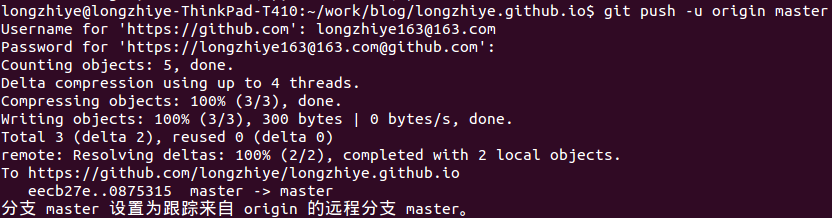